ChartQA: A Benchmark for Question Answering about Charts
with Visual and Logical Reasoning
Abstract
Charts are very popular for analyzing data. When exploring charts, people often ask a variety of complex reasoning questions that involve several logical and arithmetic operations. They also commonly refer to visual features of a chart in their questions. However, most existing datasets do not focus on such complex reasoning questions as their questions are template-based and answers come from a fixed-vocabulary. In this work, we present a large-scale benchmark covering 9.6K human-written questions as well as 23.1K questions generated from human-written chart summaries. To address the unique challenges in our benchmark involving visual and logical reasoning over charts, we present two transformer-based models that combine visual features and the data table of the chart in a unified way to answer questions. While our models achieve the state-of-the-art results on the previous datasets as well as on our benchmark, the evaluation also reveals several challenges in answering complex reasoning questions.
1 Introduction
Data visualizations such as bar charts and line charts have become popular in analyzing data and making informed decisions. To analyze data, often people ask complex reasoning questions about charts involving arithmetic and logical operations Kim et al. (2020). Answering such questions requires a significant amount of perceptual and cognitive efforts as people need to combine multiple operations such as retrieving values, comparing values, finding maximum, calculating sums and differences of values. For example, the question Q1 in Fig. 1 requires the user to compute the differences between the two lines for each year and find the year with the highest difference.
The goal of a Chart Question Answering (ChartQA) system is to help users by taking a chart and a natural language question as input and predicting the answer. This task differs from other QA tasks such as QA on texts Rajpurkar et al. (2016) and tables Pasupat and Liang (2015) because the input for ChartQA is a visual representation of data that can draw a reader’s attention to various prominent features such as trends and outliers Kim et al. (2020, 2021). Also, people tend to ask questions by referring to visual attributes of marks. For example, in Fig. 1, Q2 refers to the color of a mark (‘line’) and its attribute (‘peak’) in the chart.
|
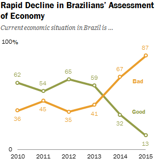 |
Q1: Which year has the most divergent opinions about Brazil’s economy? Answer: 2015 Q2: What is the peak value of the orange line? Answer: 87 |
While the task of ChartQA has received growing attentions in recent years, existing datasets have several major limitations: (i) the questions are generated automatically using pre-defined templates Kahou et al. (2017); Kafle et al. (2018); Chaudhry et al. (2020); Singh and Shekhar (2020) which lack naturalness, (ii) the charts are created automatically using a programming tool like Matplotlib Singh and Shekhar (2020) which do not reflect the diverse styles of many real-world charts, and finally, (iii) in most datasets, the answer comes from a small fixed sized vocabulary (e.g., chart axis labels, ‘yes’, ‘no’), ignoring many complex reasoning questions where the answer is derived through various mathematical operations such as aggregation and comparison.
Since most datasets only support fixed vocabulary questions, existing models usually treat the task as a classification problem and rely on dynamic encoding techniques with the questions and answers encoded in terms of spatial positions of chart elements (e.g., x-axis-label-1). Such approaches do not work when the OCR model generates errors or when the question refers to chart elements using synonyms (e.g., US vs. United States). PlotQA Methani et al. (2020) attempts to support open vocabulary questions by applying a TableQA model Pasupat and Liang (2015) but it does not consider any visual features of a chart which are critical for answering visual reasoning questions.
To address these limitations, we present a large-scale benchmark covering 9,608 human-written questions focusing on logical and visual reasoning questions. Since human annotations are costly, we also generated another 23,111 questions automatically from human-written chart summaries using a T5 model Raffel et al. (2020) and manually validated a subset of it for quality assurance. In this way, we collect a large number of questions automatically while maintaining rich variations in language as they were generated from human-written summaries. Our benchmark consists of 20,882 charts which are curated from four different online sources to ensure variety in visual styles and topics.
To address the challenges introduced in our benchmark, where many questions involve complex reasoning and visual references to charts, we propose an approach that combines visual features and extracted data from the chart image. Our pipeline first extracts the underlying data table from the chart image by adapting the ChartOCR model Luo et al. (2021) as well as the visual features from the chart image using neural models. Then, we adapt two transformer-based QA models where we utilize both the extracted data table and visual features of the chart in a unified way. Our models achieve the state-of-the-art results, or stands on par with the previous models on the previous datasets as well as on our newly created benchmark.
In sum, our main contributions are: (i) A large-scale ChartQA dataset with real-world charts and human-authored question-answer pairs; (ii) a pipeline approach that combines visual features and automatically extracted data from charts to utilize in transformer-based QA models that provide state-of-the-art results; and (iii) an extensive analysis and evaluation of the performance of our models. Our code and dataset are publicly available at https://github.com/vis-nlp/ChartQA
| Datasets | Question Types | Answer Types | Real-world Data | Real-world Charts | #Charts/ #QA pairs |
| FigureQA Kahou et al. (2017) | Template-based | Fixed | ✗ | ✗ | 180K/2.3M |
| DVQA Kafle et al. (2018) | Template-based | Fixed | ✗ | ✗ | 300K/3.4M |
| LEAF-QA Chaudhry et al. (2020) | Template-based | Fixed | ✓ | ✗ | 240K/2M |
| LEAFQA++ Singh and Shekhar (2020) | Template-based | Fixed | ✓ | ✗ | 244K/2.5M |
| PlotQA Methani et al. (2020) | Template-based | Open | ✓ | ✗ | 224K/28M |
| ChartQA-H (ours) | Human-authored | Open | ✓ | ✓ | 4.8K/9.6K |
| ChartQA-M (ours) | Machine generated | Open | ✓ | ✓ | 17.1K/23.1K |
2 Related Work
Existing Datasets
ChartQA differs from previous datasets in two main aspects: the questions’ types (human-authored vs. template-based) and the chart source (real-world vs. generated using a tool). A detailed comparison is shown in Table 1. Earlier datasets such as FigureQA Kahou et al. (2017), DVQA Kafle et al. (2018), LEAF-QA Chaudhry et al. (2020) and LEAF-QA++ Singh and Shekhar (2020) are mostly synthetic where the questions are generated using a small number of templates and the answers come from a fixed set of vocabulary (e.g. ‘yes’, ‘no’). Moreover, their charts are created automatically using the same software. While FigureQA and DVQA use synthetically-generated data to plot the charts, LEAF-QA and LEAFQA++ use real-world data. PlotQA Methani et al. (2020) is the only dataset with open-vocabulary questions that require applying aggregation operations on the underlying chart data. However, they do not have visual reasoning questions while their questions are still template-based and the charts are plotted using a software. Kim et al. (2020) ran a formative study with a very small human-authored dataset consisting of 52 charts and 629 QA pairs to understand how people ask questions about charts and explain answers. To our knowledge, there is no large-scale Chart QA dataset involving visual and logical reasoning questions written by humans on real-worlds charts which motivated us to build a new dataset.
Existing Models
There are two main approaches for Chart QA. The first approach uses classification-based visual QA models that can only handle fixed-vocabulary questions Chaudhry et al. (2020); Singh and Shekhar (2020); Kafle et al. (2019); Kahou et al. (2017); Kafle et al. (2018). These models use encoders to encode the question and the chart image and an attention mechanism to combine the features of both the question and chart before applying a classification layer. These models mostly utilize dynamic encoding techniques to encode the question in terms of the positional information of the textual elements in the chart image that are prone to OCR noise. The second approach applies table QA methods by either assuming that the data table of the chart is given Kim et al. (2020); Masry and Hoque (2021) or by extracting it from the chart image using vision techniques Methani et al. (2020).
Chart Data Extraction
Early papers introduced semi-automatic systems to extract the data from the chart images Savva et al. (2011); Jung et al. (2017). Choi et al. (2019), Liu et al. (2019), and Siegel et al. (2016) proposed fully automatic chart data extraction pipelines, however, their methods rely on various heuristics which do not work for many real-world charts and the performance was still limited. Luo et al. (2021) also automatically extract data from real-world charts with high accuracy. Still, the model only predicts the raw data values of marks (e.g., bars) without associating them with their corresponding axis or legends. We extend their pipeline to extract the fully-structured data table to pass it to our models.
3 ChartQA Datasets
3.1 Data Collection & Preparation
To ensure that our benchmark covers various topics and charts with a diverse range of styles, we crawled charts from four different sources: (i) Statista (statista.com) is an online platform that presents charts covering a variety of topics including economy, politics, and industry. (ii) The Pew research (pewresearch.org) publishes report about social and economic issues, demographic trends and public opinion with a wide variety of charts. (iii) Our World In Data or OWID (ourworldindata.org) is another platform that contains thousands of charts about different global issues such as economy, finance, and society. (iv) Organisation for Economic Co-operation and Development or OECD (oecd.org) is a global organization which shares reports and data analysis for policymaking.
For the Pew dataset, we only crawled chart images since the underlying data tables are not available. For the other three, we extracted the underlying data tables, metadata (e.g., title, chart type), SVG file and associate text description. Finally, we extracted the bounding boxes information of the different chart elements (e.g., x-axis labels) from the SVG files to train our data extraction models.
3.2 Data Annotation
We have two main annotations procedures: (i) collect human-authored QA pairs using Amazon Mechanical Turk (AMT) and (ii) generate QA pairs from the Statista human-written summaries.
Human-authored QA annotation
To create human-authored QA pairs, we designed an AMT task (see A.1 for details) in which we asked the crowdworkers to focus on two types of questions for each chart image: compositional and visual questions. Compositional questions contain at least two mathematical/logical operations like sum, difference and average, while visual questions refer to the visual attributes such as color, height, and length of graphical marks (e.g., bars) in the chart. We focus on these two types of questions because people tend to ask them commonly Kim et al. (2020); Hoque et al. and previous datasets mostly do not focus on such complex visual and logical reasoning questions. For each chart, the workers provide two questions with the answers. The same questions are then answered by another annotator. If both workers’ answers exactly match, we consider the answer to be correct. Otherwise, we manually check the answers to select the final correct answer. Overall, the agreement between the crowd workers based on exact matches was 61.04%. However, such exact match does not consider typos or lexical variations (e.g., 3$ vs. 3 dollars, 86.33 vs 86.3) that are common in human annotation. Hence, we have also manually checked the agreement on 500 random samples and found the agreement to be much higher (78.55%) when we consider typos and lexical variations.
Dataset Augmentation
Prior work on QA has performed data augmentation by either creating template-based or machine generated questions, e.g., for visual QA Kafle et al. (2017) and textual QA Lewis et al. (2021). Template-based questions generally lack rich linguistic variations. On the other hand, large-scale language models like T5 Raffel et al. (2020) which are trained on very large data from various web sources can learn general linguistic properties and variations Brown et al. (2020). Therefore, we opt for the latter.
Specifically, we fine-tune a pre-trained T5 model on the SQuAD QA dataset Rajpurkar et al. (2016) and apply to the human-written chart summaries that come with the charts from Statista to automatically generate questions that are human-like with sufficient lexical and syntactic variations. The process involves training and applying two T5 models: one for answer extraction and the other for answer-aware question generation. For answer extraction, the T5 model is trained to generate possible answers separated by [SEP] token given the textual summary as input (i.e., trained on SQuAD’s passage answer pairs). For question generation, the proposed answer is first concatenated with the summary in the format: Answer: Answer Context: Chart Summary. Then, the T5 model is trained to generate a question from the given question using the chart summary. This model is trained on SQuAD’s (passage, answer) question pairs. Since the summaries are human-written, the generated questions are similar to the human-authored questions (see example questions in A.7).
| Split | ChartQA-H | ChartQA-M | ||
| Charts | Questions | Charts | Questions | |
| Training | 3,699 | 7,398 | 15,474 | 20,901 |
| Validation | 480 | 960 | 680 | 960 |
| Test | 625 | 1,250 | 987 | 1,250 |
| Total | 4,804 | 9,608 | 17,141 | 23,111 |
However, the T5 question generation model may still generate invalid questions because of the mismatch in training and test domains. We notice that some questions are either incomplete or not answerable from the chart (e.g., ‘What province includes Cape Town?’ is not answerable because it requires knowledge outside of the chart). To filter out such invalid questions, we developed a simple heuristic where we filter out the question if the answer cannot be found in the chart data table. This heuristic was inspired by the fact that most answers to the generated questions were values/labels of chart elements. After applying the heuristic, we manually analyzed 1,250 QA pairs and found that 86.64% of them were complete, answerable, and correct given the chart. Moreover, for the sake of fair evaluation, we manually cleaned the test set of the machine generated dataset by removing invalid questions.
Data split
We randomly split both of the human-written (ChartQA-H) and machine generated (ChartQA-M) QA pairs into train, validation, and test sets as shown in Table 2.
| Type | Statista-H | Pew | OWID | OECD | Statista-M |
| Bar | 1,696 | 783 | 507 | 128 | 15,223 |
| Line | 401 | 249 | 279 | 103 | 1,768 |
| Pie | 387 | 271 | 0 | 0 | 150 |
| Total | 2,484 | 1,303 | 786 | 231 | 17,141 |
| Type | Example | % |
| Data retrieval | What’s the percentage of men who thinks Valentine’s Day is overrated? | 13.0 |
| Visual | What is the value of the rightmost light blue bar? | 10.7 |
| Compositional | How many years does the poverty percentage rose above 11%? | 43.0 |
| Both visual & compositional | Between the second and the third age groups from the left, which opinion deviates the most? | 33.3 |
3.3 Dataset Analysis
Our dataset has three commonly used chart types: bar, line, and pie charts (Table 3). Bar is the most common type of chart across all datasets as they are quite prevalent in real-world sources. We further categorize the bar and line charts into simple vs complex where data tables of simple charts have only two columns where complex charts involve multiple columns (e.g., stacked or grouped bars and multi-line charts). Among bar charts, 79.4% were simple and 29.6% were complex. For line charts, 61.0% were simple and 39.0% were complex.
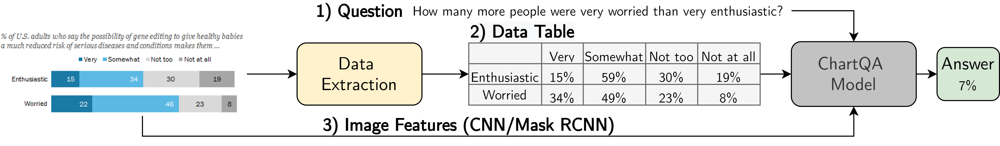
We have also analyzed the basic linguistic statistics about our benchmark (see A.2). Unlike previous datasets, our benchmark has more unique tokens on both types of QA pairs and on both questions and answers – 6,150 and 4,319 unique tokens in questions and answers respectively in ChartQA-H whereas 12,379 and 11,979 unique tokens in questions and answers respectively in ChartQA-M. We also observe that questions cover a variety of syntactic structure and sometimes exhibit informal languages and typos. Overall, this suggests the richness of language variations which may introduce more challenges to the task. Finally, the topic distribution in our data is quite diverse as it is constructed from four different sources. Politics is a common topic among all sources but particularly in the Pew dataset where nearly half of charts are about U.S. Politics & Policy (45.4 %). Other common topics include economy, health, and society.
To analyze the nature of questions, we randomly selected 300 QA pairs from our benchmark and categorized them into four types (Table 4). We see that the vast majority of questions (76.33% in total) are either compositional or both visual and compositional, which reflects the real-world scenarios where people ask complex reasoning questions. We also find that people make visual references to a variety of visual attributes of marks (see A.2), most commonly to color (e.g., ‘orange line’) and length (e.g., ‘tallest bar’) followed by size (e.g., ‘largest slice’) and position (e.g., ‘leftmost bar’).
4 Method
4.1 Problem Formulation & Data Extraction
The overall process of our ChartQA system is shown in Fig. 2. We consider two problem settings for ChartQA. The first setting assumes that the underlying data table of the chart image is available. Formally, we are given a dataset with examples , where represents a chart image, represents the underlying data table, represents a question over , and represents the answer to the question. The ChartQA models learn to predict the answer given , and .
The gold data tables are not generally accessible in most real-world scenarios. Thus we consider the second setup where the underlying data table for chart image is extracted by adapting a state-of-the-art ChartOCR Luo et al. (2021). ChartOCR first locates the main elements of the chart image (e.g., plot area, title) as well as data-encoding marks (e.g., bars ) using key-point detection networks. It then uses the detected keypoints of each mark along with axis-labels to estimate the data value of that mark. However, it does not associate the predicted data values with corresponding text labels (e.g., x-axis-label). Hence, we extend their approach to output the fully-structured data tables. We utilize the CRAFT Baek et al. (2019) model to recognize the texts in the chart elements. Then, we associate the data values with their text labels using positional and color information (see A.3 for details).
4.2 Models
Our approach to ChartQA builds on two of the state-of-the-art TableQA models: T5 Raffel et al. (2020); Nan et al. (2021) and TaPas Herzig et al. (2020). The input to these models consists of the question and the data table . Different from TableQA, ChartQA often involves extracting visual information from chart images. For this, we also experiment with the visual counterparts of the TableQA models that also take the chart image features into account. While T5 has a visual variant, VL-T5 Cho et al. (2021), TaPas does not. In this work, we extend Tapas to consider the image features and call it VisionTaPas. More details on models are provided in A.5.
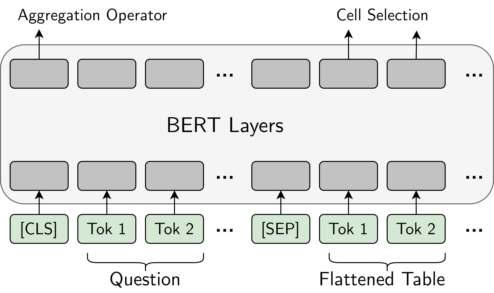
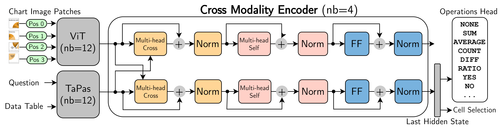
T5 Raffel et al. (2020) is an encoder-decoder model which unifies the NLP tasks as text-to-text generation using the same architecture and loss function. It has been pre-trained on massive amount of unlabelled data with a self-supervised denoising objective. To fine-tune T5 on our ChartQA task, we flatten the data table and feed it along with the question as: "Question: Question tokens Table: Flattened table tokens", and the model is trained to generate the answer directly.
VL-T5 Cho et al. (2021) is an extension of T5 that unifies the Vision-Language (VL) tasks as text generation conditioned on multimodal inputs. The input consists of both textual tokens and visual features of the objects extracted from the image using Faster R-CNN Ren et al. (2015). The model is pre-trained on multiple multimodal tasks such as language modeling, visual QA, and visual grounding. We utilize VL-T5 for our ChartQA task in the following manner. For the textual input, we do the same as T5 where we flatten the data table of the chart image and concatenate it with the question text. For the visual input, we extract the visual features of different marks in the chart image (e.g., bars, lines) using Mask R-CNN He et al. (2017) with Resnet-101 as its backbone (see A.4 for details). Unlike the original VL-T5 where a fixed number of objects is provided (36), the number of elements varies from one chart to another. To account for this, we pad the extracted visual features with zeros to have a fixed length of 36.
TaPas Herzig et al. (2020) extends a BERT Devlin et al. (2019) architecture with additional positional embeddings for rows and columns to encode a table. As shown in Fig. 3(a), the input to the model has the following format: [CLS] Question tokens [SEP] Flattened table tokens. The tokens are encoded with the table-specific positional embeddings in addition to BERT’s segment and positional embeddings. The model has two output heads: aggregation operation head and cell selection head. The aggregation operation head predicts an operation (e.g., count, sum, average, none) which is then applied to the cell values selected by the cell selection head. Depending on the operation type, the selected cells can constitute the final answer or the input used to infer the final answer.
TaPas is first pre-trained on masked language modeling objective using table-text pairs crawled from Wikipedia where table cells are randomly masked and the model is trained to predict them. It is then fine-tuned in a weakly-supervised manner (using answers as the only supervision) with end-to-end differentiable objectives.
VisionTaPas is our extension of TaPas for QA over charts. It consists of three main components: a vision transformer encoder for encoding the chart image, a TaPas encoder for encoding the question and data table and a cross-modal encoder (Fig. 3(b)).
Vision Transformer or ViT Dosovitskiy et al. (2021) utilizes the transformer encoder architecture Vaswani et al. (2017) in vision tasks. Given a 2D chart image, the image is divided into a sequence of 2D patches . Each patch is then flattened and linearly projected into a -dimensional embedding vector. To incorporate the positional information of the patches, 1D learnable positional embeddings are added to the image features. An -layer ViT encoder produces a sequence of embeddings representing the special [CLS] token and the image patches. We initialize the ViT module with the pre-trained weights from Dosovitskiy et al. (2021).
The TaPas encoder is utilized in the same manner as described above to encode the tokens in the question and the data table. For an input token sequence , an -layer TaPas generates the corresponding encodings . This module is initialized with the TaPas weights Herzig et al. (2020) pre-trained on the WikiTQ dataset Pasupat and Liang (2015).
The Cross-modality Encoder takes the output of ViT and TaPas encoders ( and ) and compute multimodal encodings. It has four blocks, each containing a visual branch and a textual-tabular branch. The input first passes through the multi-headed cross attention layers in parallel, where in the visual branch the query vectors are the visual features, and the key and context vectors are the textual-tabular features and vice versa in the textual-tabular branch. The cross-attended features are then passed through a self-attention layer followed by a fully connected layer. Similar to the transformer model, each layer applies layer normalization Ba et al. (2016) and is wrapped with a residual connection. Finally, we append the aggregation operation and the cell selection heads of TaPas to the final layer at the textual-tabular branch.
| Models | FigureQA | DVQA (ORACLE / OCR) | PlotQA | ChartQA | ||||||
| Val1 | Val2 | Test1 | Test2 | Test-Familiar | Test-Novel | Test V1 | Test V2 | Val | Test | |
| Gold Data Table Provided | ||||||||||
| TaPas | 98.10% | 98.09% | - | - | 53.40% | 53.40% | 21.56% | 19.55% | 49.16% | 51.80% |
| VisionTaPas | 97.59% | 97.96% | - | - | 99.36% | 99.37% | 80.18% | 58.29% | 59.32% | 61.84% |
| T5 | 95.75% | 95.75% | - | - | 94.33% | 81.42% | 93.24% | 85.99% | 59.11% | 59.80% |
| VL-T5 | 96.45% | 96.43% | - | - | 98.90% | 80.18% | 96.38% | 84.70% | 58.80% | 59.12% |
| Gold Data Table Not Provided | ||||||||||
| TaPas | 90.32% | 90.43% | 89.52% | 89.57% | 50.28% / 48.82% | 50.24% / 48.68% | 15.09% | 12.90% | 39.68% | 41.28% |
| VisionTaPas | 91.46% | 91.45% | 90.68% | 90.64% | 95.38% / 94.43% | 95.46% / 94.54% | 65.30% | 42.50% | 42.60% | 45.52% |
| T5 | 87.97% | 87.83% | 87.56% | 87.57% | 90.20% / 89.01% | 77.97% / 76.89% | 72.62% | 56.22% | 40.15% | 41.04% |
| VL-T5 | 88.60% | 88.49% | 88.20% | 88.18% | 94.80% / 93.75% | 77.04% / 76.14% | 75.90% | 56.02% | 38.43% | 41.56% |
| PReFIL | 94.84% | 93.26% | 94.88% | 93.16% | 96.37% / 80.88% | 96.53% / 80.04% | - | - | 4.53% | 4.8% |
| PlotQA* | - | - | - | - | ——— / 57.99% | ——— / 59.54% | - | 22.52% | 36.15% | 38.00% |
| STL-CQA | - | - | - | - | 97.35% / ——— | 97.51% / ——— | - | - | - | - |
Extension to Other Operations Many questions in our ChartQA dataset require performing a subtraction or ratio operation, which the original TaPas model does not support. We thus extend the operation head to add those two operations (Fig. 3(b)). However, instead of training them in a weakly-supervised manner based on the final answer (as done in TaPas), we find it more effective when provided with more direct but potentially noisy supervision on the cells to consider. We rely on some heuristics to generate such supervision in our training data. For example, given a question “What’s the difference between A and B?”, an answer , and data values “3, 6, 8”, we look for two values between which the difference is 5 (i.e. 8 and 3). While this may yield noisy supervision, similar approaches have been successfully exploited to inject reasoning capability in neural models Geva et al. (2020); Saxton et al. (2019); on a random sample of 100 such questions, a manual checking shows 24% noise with our heuristics. To handle the fixed vocabulary answers (e.g. ‘Yes’, ‘No’), we further extend the operation head to include those classes.
5 Evaluation
5.1 Datasets, Baselines & Metrics
We evaluate our models on three datasets from previous work namely, FigureQA Kahou et al. (2017), PlotQA Methani et al. (2020) and DVQA Kafle et al. (2018), as well as our newly created ChartQA dataset. We compare our benchmarking models (Section 4.2) with two following baselines111Two other datasets (LeafQA, LeafQA++) and baselines (STL-CQA, LEAF-NET) are not publicly available:
PReFIL Kafle et al. (2019) is a classification approach that fuses the question and image features in parallel. The features are then aggregated and projected into a final classification layer.
PlotQA* is our reimplementation of PlotQA Methani et al. (2020). It parses the chart image to extract the underlying data table and then employs a TableQA model from Pasupat and Liang (2015). However, since their data extraction approach is specific to their synthetic dataset that does not generalize well to real-world charts, we use data tables extracted according to our method (section 4.1) to evaluate their approach.
Following Methani et al. (2020), we use a relaxed accuracy measure for the numeric answers to allow a minor inaccuracy that may result from the automatic data extraction process. We consider an answer to be correct if it is within 5% of the gold answer. For non-numeric answers, we still need an exact match to consider an answer to be correct.
5.2 Results
Previous Datasets When the gold data table is provided, VisionTaPas and VL-T5 achieve near perfect results, however, the performance slightly decreases when it is not provided (Table 5). Still, VisionTaPas and VL-T5 achieve state-of-the-art results on DVQA (fully-automated setup) and PlotQA V1 datasets, respectively. For example, VisionTaPas achieves 94.54% accuracy in the DVQA test set (14.5% margin over PReFIL). Moreover, our approach proved to be more robust to OCR noise. Unlike PReFIL whose performance significantly dropped by 16.49% when using OCR outputs instead of ORACLE, VisionTaPas only witnessed a marginal decrease in performance (0.92%). Similarly, in the PlotQA dataset, both models have outperformed the PlotQA model by wide margins. Another observation is that the improvement of VL-T5 over T5 is limited only to the PlotQA V1 dataset likely due to the lack of visual reasoning questions. In fact, the performance of both models is quite similar on PlotQA V2 test set where the majority of the questions are not visual. Finally, while the TaPas model achieves the best results on FigureQA (Gold Table setup), it does not perform very well on DVQA and PlotQA. This is likely because most questions in FigureQA are answerable from the data table alone. In PlotQA, however, questions are not always answerable from the data table alone and may involve the difference and ratio operations which are not supported by TaPas. This highlights the importance of the extensions we have made in the VisionTaPas model.
ChartQA Dataset We observe that VisionTaPas achieves state-of-the-art performance on both problem scenarios. PReFIL performs pooly (4.8%) as it is a classification model which does not work well for the open-vocabulary questions in our dataset. We also notice VL-T5 does not necessarily improve over T5, likely because many visual questions in our new dataset involve multiple references to chart elements and VL-T5 cannot effectively capture such references. Overall, the accuracies of different models are generally lower in our dataset compared to previous datasets, suggesting the challenges introduced with the human-written visual and logical reasoning questions. Finally, the performance of our models decreases when the gold data table was not given. This highlights the increasing challenge of automatic data extraction from real-world charts with diversity in styles.
We also evaluate the transferability of the models and the datasets, where we first pretrain the two top performing models (VisionTaPas and VL-T5) on the PlotQA dataset and then fine-tune them on ChartQA. From Table 6, we notice that the accuracy increased from 41.56% to 51.84% for VL-T5 while the improvement for VisionTaPas was marginal (1.56%). One possible explanation is that VisionTaPas does not support nested arithmetic operations which are prevalent in ChartQA, so pretraining does not have a substantial effect. In contrast, we observe that the performance gain for VL-T5 were mainly for the compositional questions that do not require nested operations. Overall, this suggests that large datasets like PlotQA can be useful for pretraining the model even if the questions are generated from a small number of templates.
We also performed an another experiment in which we train the VL-T5 and VisionTaPas on the PlotQA dataset and evaluate directly on the ChartQA dataset without any fine-tuning. As shown in Table 6, the performance of the models decreased by wide margins when they are trained on the PlotQA dataset instead of the target dataset (e.g,. 45.52% to 31.96% for VisionTaPas). This supports our hypothesis that our newly created dataset, ChartQA, introduces more challenging visual and compositional questions and more lexical variations which the previous datasets lack.
5.3 Ablation Studies
To assess the importance of extensions we made in the VisionTaPas model, we conducted an ablation study in which we remove the supervision for ‘difference’ and ‘ratio’ operations from the model. The overall accuracy dropped by 1.80% and the accuracy on ChartQA-H (which have many such questions) dropped by 4.76% which suggests the usefulness of these operations (Table 6).
| Model | ChartQA-H | ChartQA-M | Overall |
| TaPas | 28.72% | 53.84% | 41.28% |
| VisionTaPas | 29.60% | 61.44% | 45.52% |
| VisionTaPas† | 24.84% | 61.60% | 43.72% |
| T5 | 25.12% | 56.96% | 41.04% |
| VL-T5 | 26.24% | 56.88% | 41.56% |
| VisionTaPas⋆ | 25.12% | 38.80% | 31.96% |
| VL-T5⋆ | 22.08% | 19.84% | 20.96% |
| VisionTaPas Pretrained | 32.56% | 61.60% | 47.08% |
| VL-T5 Pretrained | 40.08% | 63.60% | 51.84% |
We further analyze the performance by chart types and question types (see A.6). VisionTapas and VL-T5 perform better on bar charts while the performance decreases for other charts mainly due to higher data extraction errors, especially for pie charts which are less common in our dataset. To analyze question types, we randomly sampled 200 human-written questions. As expected, the performance is much higher on the data retrieval questions that do not require mathematical reasoning while the performance is lower for visual questions which refers to chart elements.
5.4 Qualitative Analysis
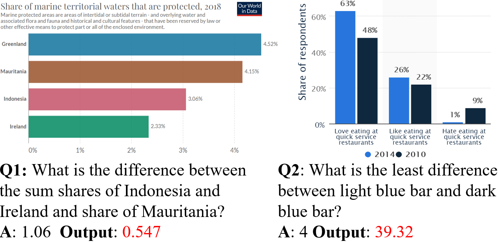
We have manually analyzed model predictions to investigate the key challenges existing models face (see sample predictions in A.7).
Logical Inference with Nested Operations While VisionTaPas and VL-T5 handle various mathematical/logical operations, still they cannot effectively handle nested operations. For example, Q1 in fig. 4 requires the model to add two numbers and then subtract from another number, but our model only outputs the difference between two numbers.In future, we will extend the VisionTaPas model (by possibly training it in a sequential fashion Cho et al. (2018)) to address the issue.
Input Representation Complex visual compositional questions may require a multi-stage reasoning process (e.g., Q2 in fig. 4). Currently, our models take the data table and the visual features of the chart separately and then combine them. Such representation does not fully capture the chart structure. In future, we will develop better representations including semantic graph representations Teney et al. (2017) that can exploit the relations among the question, chart objects, and data values.
Computer Vision Challenges Table 5 indicates that performance of our models decrease when the gold table is not given, suggesting the need for more accurate data extraction. Current approaches for automatic data extraction are modular and combine deep learning and rule-based methods which are error-prone. An end-to-end deep learning approach could help improve the performance and generalize well to different chart styles.
6 Conclusion
We present ChartQA, a new large-scale benchmark with human-written questions focusing on visual and logical reasoning. We also introduce a new approach that combines visual features and extracted data table from a chart to answer questions. While our evaluation highlights the promise of this approach, it also reveals several unique challenges emerge from the visual and logical reasoning questions asked by human which exhibit the informal, intricate, and nuanced nature of language. We hope that our benchmark will serve as a starting point for others to address these challenges.
Acknowledgement
The authors would like to thank the anonymous reviewers for their helpful comments. This research was supported by the Natural Sciences & Engineering Research Council (NSERC) of Canada.
Ethical Considerations
During the dataset collection and annotation process, we have considered several ethical issues. To respect the intellectual property of dataset sources, we only used the publicly available charts that comply with their terms and conditions. According to Statista publication rights,222https://www.statista.com/getting-started/publishing-statista-content-terms-of-use-and-publication-rights users are given open access to the publicly available charts for academic purposes. According to the terms and conditions for Pew,333https://www.pewresearch.org/about/terms-and-conditions/ users are allowed to download and publish the content as long as they are attributed to the Center or are not attributed to a different party. According to OECD 444https://www.oecd.org/termsandconditions/ terms and conditions, users can crawl and use the data in their own work for any purpose unless where restrictions apply. According to OWID 555https://ourworldindata.org/faqs#can-i-use-or-reproduce-your-data terms and conditions, all their data are open access and users can download or utilize the data in their own work.
In order to fairly compensate the Mechanical Turk annotators, we considered the minimum wage in the United States at the time ($7.25 USD per hour). The estimated time taken for each task is 3-5 minutes. Hence, these annotators received $0.6 USD for each task. Additionally, to protect the privacy of these annotators, all of their annotations were anonymized.
To ensure the reproducibility of our experimental results, our hyperparameters settings are provided in Section A.5.
Our models can be abused to mislead the public about the charts content and implications. While our models provide state-of-the-art results on most of the existing datasets, we can not guarantee that their output will be correct all the time.
References
- Ba et al. (2016) Jimmy Ba, Jamie Ryan Kiros, and Geoffrey E. Hinton. 2016. Layer normalization. ArXiv, abs/1607.06450.
- Baek et al. (2019) Jeonghun Baek, Geewook Kim, Junyeop Lee, Sungrae Park, Dongyoon Han, Sangdoo Yun, Seong Joon Oh, and Hwalsuk Lee. 2019. What is wrong with scene text recognition model comparisons? dataset and model analysis. In International Conference on Computer Vision (ICCV).
- Brown et al. (2020) Tom Brown, Benjamin Mann, Nick Ryder, Melanie Subbiah, Jared D Kaplan, Prafulla Dhariwal, Arvind Neelakantan, Pranav Shyam, Girish Sastry, Amanda Askell, Sandhini Agarwal, Ariel Herbert-Voss, Gretchen Krueger, Tom Henighan, Rewon Child, Aditya Ramesh, Daniel Ziegler, Jeffrey Wu, Clemens Winter, Chris Hesse, Mark Chen, Eric Sigler, Mateusz Litwin, Scott Gray, Benjamin Chess, Jack Clark, Christopher Berner, Sam McCandlish, Alec Radford, Ilya Sutskever, and Dario Amodei. 2020. Language models are few-shot learners. In Advances in Neural Information Processing Systems, volume 33, pages 1877–1901. Curran Associates, Inc.
- Chaudhry et al. (2020) R. Chaudhry, S. Shekhar, U. Gupta, P. Maneriker, P. Bansal, and A. Joshi. 2020. Leaf-qa: Locate, encode attend for figure question answering. In 2020 IEEE Winter Conference on Applications of Computer Vision (WACV), pages 3501–3510.
- Cho et al. (2021) Jaemin Cho, Jie Lei, Hao Tan, and Mohit Bansal. 2021. Unifying vision-and-language tasks via text generation. In ICML.
- Cho et al. (2018) Minseok Cho, Reinald Kim Amplayo, Seung won Hwang, and Jonghyuck Park. 2018. Adversarial tableqa: Attention supervision for question answering on tables. ArXiv, abs/1810.08113.
- Choi et al. (2019) J. Choi, Sanghun Jung, Deok Gun Park, J. Choo, and N. Elmqvist. 2019. Visualizing for the non-visual: Enabling the visually impaired to use visualization. Computer Graphics Forum, 38.
- Devlin et al. (2019) Jacob Devlin, Ming-Wei Chang, Kenton Lee, and Kristina Toutanova. 2019. BERT: Pre-training of deep bidirectional transformers for language understanding. In Proceedings of the 2019 Conference of the North American Chapter of the Association for Computational Linguistics: Human Language Technologies, Volume 1 (Long and Short Papers), pages 4171–4186, Minneapolis, Minnesota. Association for Computational Linguistics.
- Dosovitskiy et al. (2021) Alexey Dosovitskiy, Lucas Beyer, Alexander Kolesnikov, Dirk Weissenborn, Xiaohua Zhai, Thomas Unterthiner, Mostafa Dehghani, Matthias Minderer, Georg Heigold, Sylvain Gelly, Jakob Uszkoreit, and Neil Houlsby. 2021. An image is worth 16x16 words: Transformers for image recognition at scale. In International Conference on Learning Representations.
- Eisenschlos et al. (2020) Julian Eisenschlos, Syrine Krichene, and Thomas Müller. 2020. Understanding tables with intermediate pre-training. In Findings of the Association for Computational Linguistics: EMNLP 2020, pages 281–296, Online. Association for Computational Linguistics.
- Geva et al. (2020) Mor Geva, Ankit Gupta, and Jonathan Berant. 2020. Injecting numerical reasoning skills into language models. In Proceedings of the 58th Annual Meeting of the Association for Computational Linguistics, pages 946–958, Online. Association for Computational Linguistics.
- He et al. (2017) Kaiming He, Georgia Gkioxari, Piotr Dollár, and Ross Girshick. 2017. Mask r-cnn. In 2017 IEEE International Conference on Computer Vision (ICCV), pages 2980–2988.
- Herzig et al. (2020) Jonathan Herzig, Pawel Krzysztof Nowak, Thomas Müller, Francesco Piccinno, and Julian Eisenschlos. 2020. TaPas: Weakly supervised table parsing via pre-training. In Proceedings of the 58th Annual Meeting of the Association for Computational Linguistics, pages 4320–4333, Online. Association for Computational Linguistics.
- (14) Enamul Hoque, Vidya Setlur, Melanie Tory, and Isaac Dykeman. Applying pragmatics principles for interaction with visual analytics. IEEE Transactions on Visualization and Computer Graphics.
- Jung et al. (2017) Daekyoung Jung, Wonjae Kim, Hyunjoo Song, Jeong-in Hwang, Bongshin Lee, Bohyoung Kim, and Jinwook Seo. 2017. ChartSense: Interactive Data Extraction from Chart Images, page 6706–6717. Association for Computing Machinery, New York, NY, USA.
- Kafle et al. (2018) Kushal Kafle, Scott Cohen, Brian L. Price, and Christopher Kanan. 2018. DVQA: understanding data visualizations via question answering. CoRR, abs/1801.08163.
- Kafle et al. (2019) Kushal Kafle, Robik Shrestha, Brian L. Price, Scott Cohen, and Christopher Kanan. 2019. Answering questions about data visualizations using efficient bimodal fusion. CoRR, abs/1908.01801.
- Kafle et al. (2017) Kushal Kafle, Mohammed Yousefhussien, and Christopher Kanan. 2017. Data augmentation for visual question answering. In Proceedings of the 10th International Conference on Natural Language Generation, pages 198–202, Santiago de Compostela, Spain. Association for Computational Linguistics.
- Kahou et al. (2017) Samira Ebrahimi Kahou, Adam Atkinson, Vincent Michalski, Ákos Kádár, Adam Trischler, and Yoshua Bengio. 2017. Figureqa: An annotated figure dataset for visual reasoning. CoRR, abs/1710.07300.
- Kim et al. (2020) Dae Hyun Kim, Enamul Hoque, and Maneesh Agrawala. 2020. Answering questions about charts and generating visual explanations. In Proceedings of the 2020 CHI Conference on Human Factors in Computing Systems, pages 1–13.
- Kim et al. (2021) Dae Hyun Kim, Vidya Setlur, and Maneesh Agrawala. 2021. Towards understanding how readers integrate charts and captions: A case study with line charts. In Proceedings of the CHI Conference on Human Factors in Computing Systems, pages 1–11.
- Law and Deng (2019) Hei Law and Jia Bin Deng. 2019. Cornernet: Detecting objects as paired keypoints. International Journal of Computer Vision, 128:642–656.
- Lewis et al. (2021) Patrick Lewis, Yuxiang Wu, Linqing Liu, Pasquale Minervini, Heinrich Küttler, Aleksandra Piktus, Pontus Stenetorp, and Sebastian Riedel. 2021. PAQ: 65 Million Probably-Asked Questions and What You Can Do With Them. Transactions of the Association for Computational Linguistics, 9:1098–1115.
- Lin et al. (2014) Tsung-Yi Lin, Michael Maire, Serge J. Belongie, Lubomir D. Bourdev, Ross B. Girshick, James Hays, Pietro Perona, Deva Ramanan, Piotr Dollár, and C. Lawrence Zitnick. 2014. Microsoft COCO: common objects in context. CoRR, abs/1405.0312.
- Liu et al. (2019) Xiaoyi Liu, Diego Klabjan, and Patrick N. Bless. 2019. Data extraction from charts via single deep neural network. ArXiv, abs/1906.11906.
- Luo et al. (2021) Junyu Luo, Zekun Li, Jinpeng Wang, and Chin-Yew Lin. 2021. Chartocr: Data extraction from charts images via a deep hybrid framework. 2021 IEEE Winter Conference on Applications of Computer Vision (WACV), pages 1916–1924.
- Masry and Hoque (2021) Ahmed Masry and Enamul Hoque. 2021. Integrating image data extraction and table parsing methods for chart question answering. Chart Question Answering Workshop, in conjunction with the Conference on Computer Vision and Pattern Recognition (CVPR), pages 1–5.
- Methani et al. (2020) Nitesh Methani, Pritha Ganguly, Mitesh M. Khapra, and Pratyush Kumar. 2020. Plotqa: Reasoning over scientific plots. In Proceedings of the IEEE/CVF Winter Conference on Applications of Computer Vision (WACV).
- Nan et al. (2021) Linyong Nan, Chiachun Hsieh, Ziming Mao, Xi Victoria Lin, Neha Verma, Rui Zhang, Wojciech Kryściński, Nick Schoelkopf, Riley Kong, Xiangru Tang, Murori Mutuma, Ben Rosand, Isabel Trindade, Renusree Bandaru, Jacob Cunningham, Caiming Xiong, and Dragomir Radev. 2021. Fetaqa: Free-form table question answering. arXiv preprint arXiv:2104.00369.
- Pasupat and Liang (2015) Panupong Pasupat and Percy Liang. 2015. Compositional semantic parsing on semi-structured tables. In Proceedings of the 53rd Annual Meeting of the Association for Computational Linguistics and the 7th International Joint Conference on Natural Language Processing (Volume 1: Long Papers), pages 1470–1480, Beijing, China. Association for Computational Linguistics.
- Raffel et al. (2020) Colin Raffel, Noam Shazeer, Adam Roberts, Katherine Lee, Sharan Narang, Michael Matena, Yanqi Zhou, Wei Li, and Peter J. Liu. 2020. Exploring the limits of transfer learning with a unified text-to-text transformer. Journal of Machine Learning Research, 21(140):1–67.
- Rajpurkar et al. (2016) Pranav Rajpurkar, Jian Zhang, Konstantin Lopyrev, and Percy Liang. 2016. Squad: 100, 000+ questions for machine comprehension of text. CoRR, abs/1606.05250.
- Ren et al. (2015) Shaoqing Ren, Kaiming He, Ross B. Girshick, and Jian Sun. 2015. Faster R-CNN: towards real-time object detection with region proposal networks. CoRR, abs/1506.01497.
- Savva et al. (2011) M. Savva, Nicholas Kong, Arti Chhajta, Li Fei-Fei, Maneesh Agrawala, and J. Heer. 2011. Revision: automated classification, analysis and redesign of chart images. Proceedings of the 24th annual ACM symposium on User interface software and technology.
- Saxton et al. (2019) David Saxton, Edward Grefenstette, Felix Hill, and Pushmeet Kohli. 2019. Analysing mathematical reasoning abilities of neural models. In International Conference on Learning Representations.
- Siegel et al. (2016) Noah Siegel, Zachary Horvitz, Roie Levin, Santosh Kumar Divvala, and Ali Farhadi. 2016. Figureseer: Parsing result-figures in research papers. In ECCV.
- Singh and Shekhar (2020) Hrituraj Singh and Sumit Shekhar. 2020. STL-CQA: Structure-based transformers with localization and encoding for chart question answering. In Proceedings of the 2020 Conference on Empirical Methods in Natural Language Processing (EMNLP), pages 3275–3284, Online. Association for Computational Linguistics.
- Teney et al. (2017) Damien Teney, Lingqiao Liu, and Anton van den Hengel. 2017. Graph-structured representations for visual question answering. 2017 IEEE Conference on Computer Vision and Pattern Recognition (CVPR), pages 3233–3241.
- Vaswani et al. (2017) Ashish Vaswani, Noam Shazeer, Niki Parmar, Jakob Uszkoreit, Llion Jones, Aidan N. Gomez, Lukasz Kaiser, and Illia Polosukhin. 2017. Attention is all you need. CoRR, abs/1706.03762.
- Wolf et al. (2019) Thomas Wolf, Lysandre Debut, Victor Sanh, Julien Chaumond, Clement Delangue, Anthony Moi, Pierric Cistac, Tim Rault, Rémi Louf, Morgan Funtowicz, and Jamie Brew. 2019. Huggingface’s transformers: State-of-the-art natural language processing. CoRR, abs/1910.03771.
- Wu et al. (2019) Yuxin Wu, Alexander Kirillov, Francisco Massa, Wan-Yen Lo, and Ross Girshick. 2019. Detectron2. https://github.com/facebookresearch/detectron2.
Appendix A Appendices
A.1 Additional Details on Data Annotation
Amazon Mechanical Turk Task: In each HIT (Human Intelligent Task), the workers verify two previously asked questions by other workers and also provide two new QA pairs. To ensure quality, we selected workers with an acceptance rate of 95% and total accomplished HITs of 5000. Moreover, we further filtered the workers by giving them a pre-test to select the best qualified workers for this task. The data collection interface is shown in Figure 5. While presenting the chart, we ensure that the data labels of chart elements are visible to workers so that they can accurately perform the necessary arithmetic and logical operations to provide and answer the questions successfully.
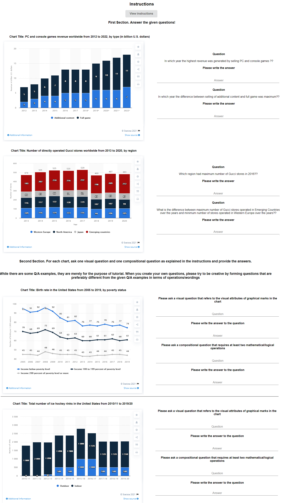
A.2 Dataset Analysis
Table 7 shows some linguistic statistics about our benchmark. Also, Figure 6 shows the distribution of topics in our dataset for each of the four sources. Politics is a common topic among all sources but particularly in the Pew dataset where nearly half of charts are about U.S. Politics & Policy (45.4 %). The most frequent topic from OECD and OWID is Society (34.0 % and 26.0 % respectively).
Furthermore, we analyzed how people make visual references to charts in their questions. Table 8 shows the usage of visual references made in the randomly selected 300 QA pairs.
| Type | ChartQA-H | ChartQA-M |
| Avg. Character per question | 60.53 | 67.82 |
| Avg. Character per answer | 5.31 | 5.0 |
| Avg. Token per question | 12.32 | 13.18 |
| Avg. Token per answer | 1.31 | 1.08 |
| Unique tokens in questions | 6,150 | 12,379 |
| Unique tokens in answers | 4,319 | 11,979 |
| Numeric answers | 6,583 | 19,622 |
| Non-numeric answers | 3,025 | 3,489 |
| Type | Examples | Percentage |
| Color | green line, red bar | 44.70% |
| Length | tallest bar | 40.15% |
| Size | largest pie slice | 11.36% |
| Position | rightmost, topmost | 8.33% |
| Counting marks | how many green bars | 3.03% |
| Unit of a mark | bar unit | 0.76% |
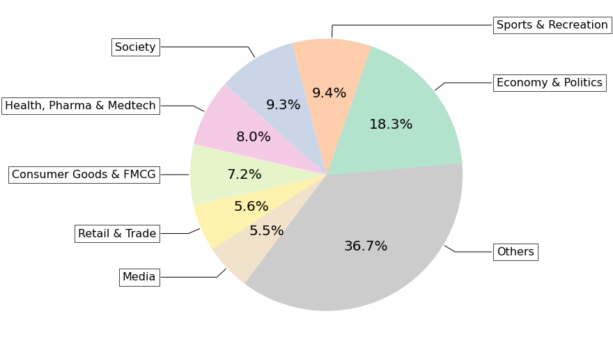
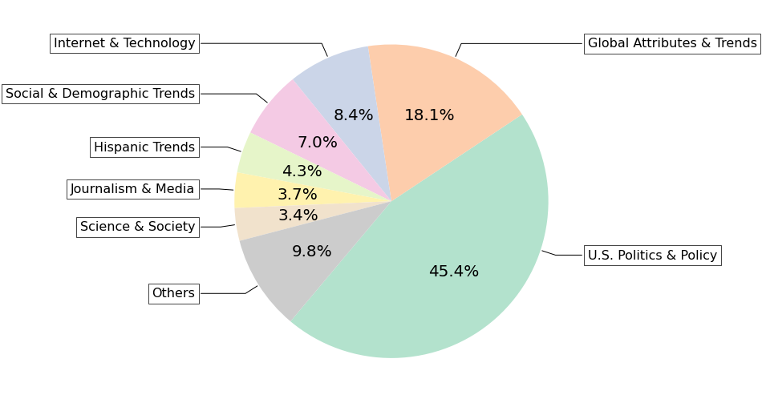
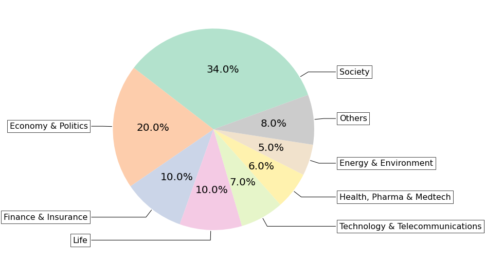
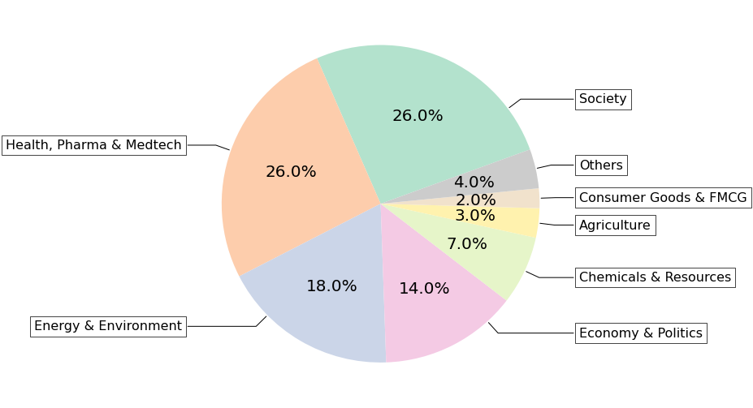
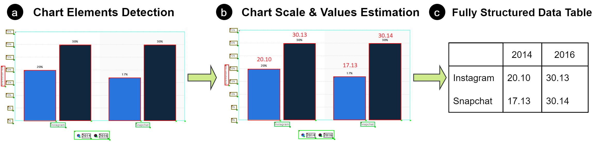
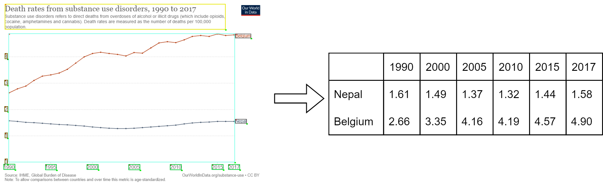
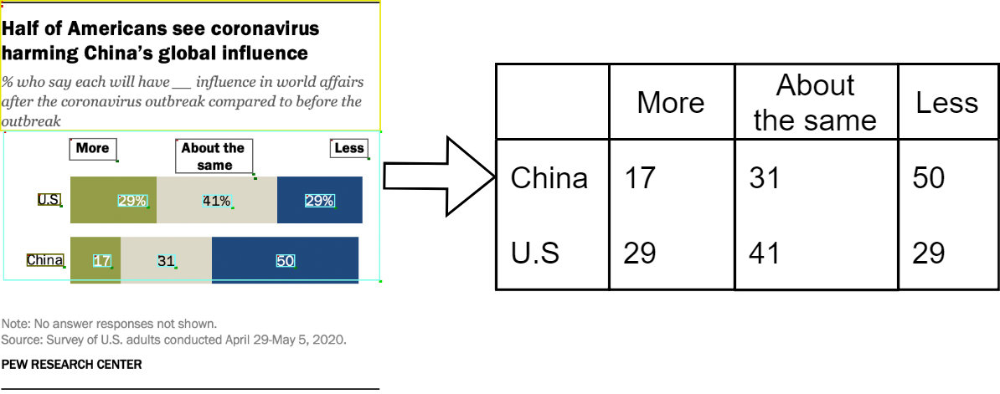
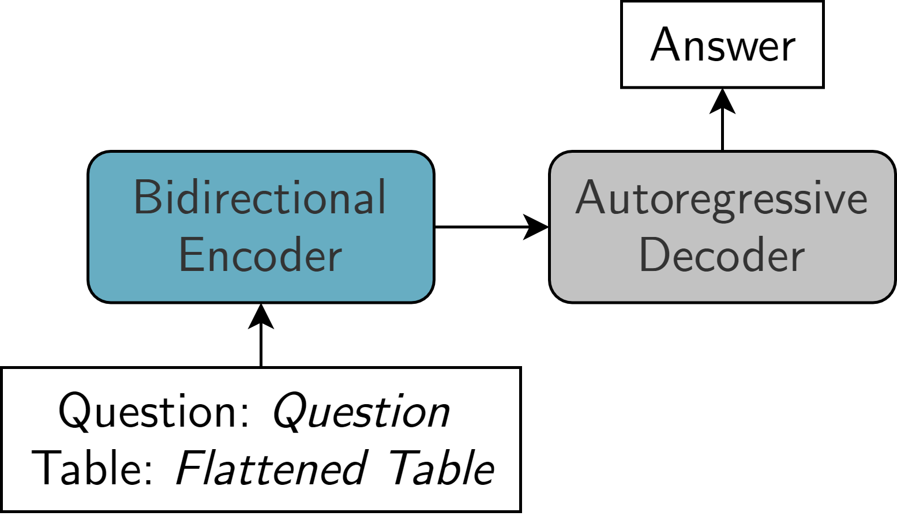
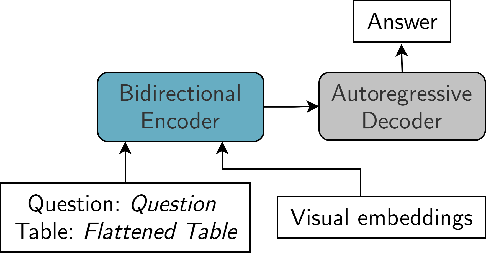
A.3 Automatic Chart Data Extraction
Model: We extend ChartOCR Luo et al. (2021) which relies on both deep-learning models and rule-based techniques to parse the chart image into the underlying data table. As described in Section (section 4.1), the chart image is parsed in three main stages. In the first stage, key-point detection networks, adapted from Law and Deng (2019), locates the chart visual marks (e.g. bars, plot area, line points). Ideally, the network locates the top-left point and bottom-right points for the rectangular objects (e.g. bar, plot area). In line charts, the detection network locates the coordinates of the points connecting the line segments. In pie charts, the network locates the intersection points between the pie segments along the pie perimeter. We extend their detection networks to also locate the chart textual elements (e.g. x-axis-label, legend-label ) as shown in Figure 7a and utilize the CRAFT model Baek et al. (2019) to read their underlying texts. In the second stage, the chart scale is estimated using the y-axis-labels value for line and bar charts, Figure 7b. For pie charts, the value of each segment is estimated by calculating the angle between its borderlines. Finally, the model aggregates the extracted data values (using color and proximity heuristics) to output the final raw data values. We extend their approach to extract the fully-structured data table with the textual labels (e.g. column headers). As shown in Figure 7, we associate the estimated bars data values (e.g., ‘17.13’, ‘40.14’) with their closest x-axis-label (’Snapchat’). Moreover, if the chart has more than one data series (dark bars or blue bars values), each data series is matched with its legend-label (e.g., ‘2016’, ‘2014’) based on the color of the legend mark and data-encoding marks (e.g., bars). If we cannot match data values with legends by colors (e.g., when all legend marks have the same color or there are no legend marks), we use other criteria that associate data-encoding marks with legend marks (e.g., proximity, alignment). For example, in Figure 8(b), ’More’ is matched with ’17’ and ’29’ since they are vertically aligned. Similarly, for line charts if there is no explicit legend mark for a line series we associate the legend labels with the points of their closest lines as shown in Figure 8(a).
Evaluation Metric: Our evaluation metric is adapted from ChartOCR Luo et al. (2021). The distance between any two data values is estimated as follows:
where is the ground truth value and is the predicted value. For each chart, the cost matrix , where is computed and the total minimum cost is calculated by solving the following linear sum assignment problem
Where and is a binary assignment matrix. The final overall score is then estimated as follows:
where is the total number of charts. Our evaluation results are shown in Table 9. We have noticed that the accuracy is specifically lower on line and dot line charts in FigureQA and PlotQA. In DVQA, the extracted tables from logarithmic-scale charts were quite noisy since ChartOCR does not support them. Moreover, PlotQA has many charts with very large values (usually written in E notation). Hence, errors in such figures have higher impact on the overall accuracy. Overall, the accuracy on PlotQA and ChartQA are generally lower since they have more complex charts (PlotQA has numerous charts with very large values (e.g., ) and ChartQA has real-world challenging charts). A major limitation of evaluation metrics for the chart data extraction is that they do not take the extracted textual tokens into consideration (which are much more noisy in real-world figures). Hence, better metrics are still needed in the future.
| Dataset | Accuracy |
| FigureQA | 95.05% |
| DVQA | 89.98% |
| PlotQA | 80.88% |
| ChartQA | 83.85% |
A.4 Visual Features Extraction in VL-T5
Object Detection (Mask R-CNN)
We train the model to detect the following 15 objects: ’Legend’, ’yAxisTitle’, ’ChartTitle’, ’xAxisTitle’, ’LegendPreview’, ’PlotArea’, ’yAxisLabel’, ’xAxisLabel’, ’LegendLabel’, ’PieLabel’, ’bar’, ’pie’, ’pieSlice’, ’line’, and ’dotLine’. For the bounding boxes annotations, we use the available bboxes. For the masks, we generate them easily using the bounding boxes for all the rectangular objects. For ’pieSlice’ and ’pie’, we follow a similar approach to Singh and Shekhar (2020) where we generate the masks by projecting the radius along the pie perimeter from the starting to the ending points of each slice. We use the detectron2 library Wu et al. (2019) and initialize the model with pre-trained wights on the COCO dataset Lin et al. (2014). We fine-tune the model with a batch size of 8 and an initial learning rate 0f 0.00025 for 50K iterations.
A.5 ChartQA Baseline Models
T5 and VL-T5 fine-tuning process setup is shown in Figure 9. Our experiments were carried out on one 4-V100 GPU and one 4-A100 GPU machines. Fine-tuning VL-T5 on the PlotQA dataset was the longest experiment which took around 64-70 hours on 4 V100 GPUs.
TaPas
We follow the same settings as Herzig et al. (2020) on the WikiTQ dataset Pasupat and Liang (2015) and fine-tune the TaPas-base-wtq for 40K iterations with a batch size 24 on DVQA, PlotQA, and our new dataset. For FigureQA, we follow similar settings to Eisenschlos et al. (2020) and fine-tune the model with classification objective for 4 epochs with a batch size of 48 and initial learning rate of 0.00001.
VisionTaPas
We fine-tune the model (TaPas-Base 12 layers, ViT-Base 12 layers, and 4 Cross-Modality Layers) for 4 epochs on FigureQA and DVQA, one epoch on PlotQA, and 30 epochs on the new dataset. We use an initial learning rate of 0.00001 and a batch size of 64.
T5
We fine-tune T5-Base (220M, 12 layers) using the huggingface library Wolf et al. (2019) for 4 epochs on FigureQA, DVQA, and PlotQA datasets and for 30 epochs on our new dataset. We use a batch size of 40 and an initial learning rate of 0.0001. Inference is done with beam search of size 4.
VL-T5
Similar to T5, we fine-tune VL-T5-Base (220M 12 layers) for 20 epochs on FigureQA and DVQA, 10 epochs on PlotQA, and 30 epochs on our dataset. We use a batch size of 96 and an initial learning rate of 0.0001. Inference is done with beam search of size 5.
PlotQA
PReFIL
We follow similar settings to Kafle et al. (2019) and train the model for 100 epochs with batch size of 128 and a learning rate of 0.001.
A.6 Additional Results from Evaluation
Table 10 presents the results of two top-performing models in our benchmark by chart types. To analyze question types, we randomly sampled 200 QA pairs from our ChartQA-H and classified them into four main categories. Table 11 shows the results by question types on this set of 200 QA pairs.
| Model | Bar | Line | Pie | Overall |
| VisionTaPas | 49.80% | 38.20% | 24.41% | 45.52% |
| VL-T5 | 45.82% | 35.40% | 25.00% | 41.56% |
| Model | Data Retrieval | Visual Compositional | Compositional | Visual | Overall |
| VisionTaPas | 60.00% | 29.78% | 34.88% | 16.21% | 34.00% |
| VL-T5 | 50.00% | 19.14% | 24.41% | 21.62% | 26.50% |
A.7 Sample Questions and Outputs
Sample machine-generated questions with the human-written summaries are shown in Table 12. Sample predictions from our model, VisionTaPas on ChartQA test set are shown in Figure 10.
| Question Type | Human-written Summary | Generated Question | Answer |
| Compositional | Cancer was the leading cause of death among state prisoners in the United States, which killed 1,137 state prisoners in 2018. Heart disease was the second leading cause of death in that year, accounting for 1,052 deaths. | What was the second leading cause of death among state prisoners in 2018? | Heart disease |
| Compositional | This statistic shows the number of tourist arrivals at accommodation establishments in Latvia from 2006 to 2019. Since 2009 there has been an increasing trend in arrivals. | Since what year has there been an increasing trend in arrivals? | 2009 |
| Data Retrieval | The statistic shows the youth unemployment rate in the Gambia from 1999 to 2019. According to the source, the data are ILO estimates. In 2019, the estimated youth unemployment rate in the Gambia was at 12.44 percent. | What was the youth unemployment rate in the Gambia in 2019? | 12.44 percent |
| Data Retrieval | This statistic shows the total population of Portugal from 2016 to 2020, with projections up until 2026. In 2020, the total population of Portugal was at approximately 10.29 million inhabitants. | In what year did Portugal’s population reach 10.29 million? | 2020 |
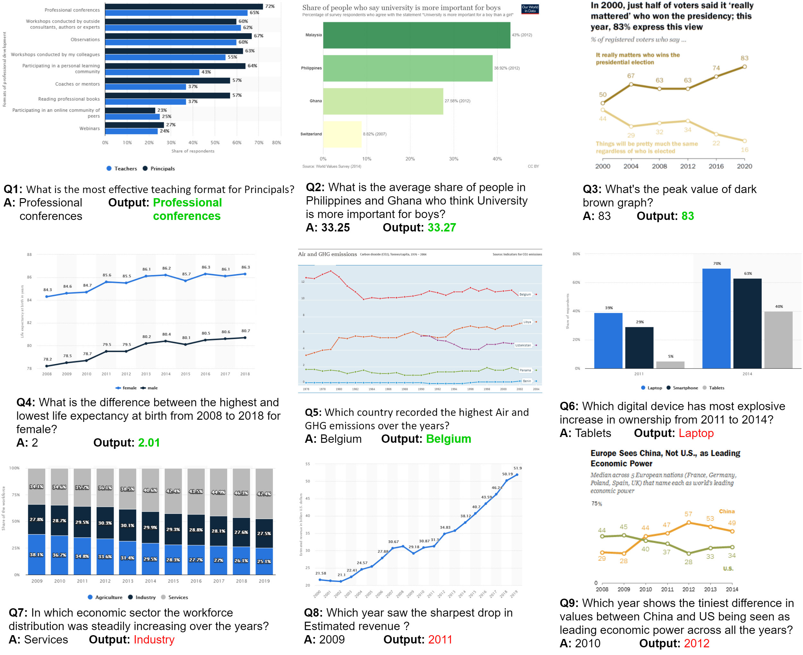